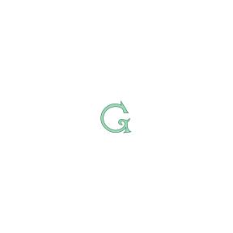

grin
✓ simple ✓ privacy-focused ✓ scalable
A next generation blockchain for tokens and contracts
Grin is still highly experimental technology. Here be dragons and wizards. Participating in the grin community might be addictive.
expand_moreGet grin
If you are a Mac user, you can install grin with brew:
brew install grinIf you are a Linux or Windows user, download the latest release. Optionally add path of the folder release/ to the system environment variable PATH.
Now you can send grin commands:
grin help welcomeTo start your own grin server, run: grin server start.
Or, you can try grin in your browser with grin local.
Create a grin miner
The fastest way to create a new wallet in grin is using grin wallet init.
Create a grin wallet:
grin wallet initThen start the wallet listener:
grin wallet -e listenFor documentation see the grin docs.
Features?
| C h a i n | Yes |
| Blocks | Yes |
| Cuckoo PoW | Yes |
| Interim test transactions | Yes. Soon to be replaced. |
| CPU miner | Yes. |
| P2P | Yes. Public IPv4 only |
| Testnet1 | Yes |
| Wallet | Yes |
| API | Yes |
| Private transactions | In progress |
| GPU miner | In progress |
| Better P2P | In progress |
| Testnet2 | In progress |
| BulletProof transactions | Cloning rust developers... |
| User friendly error messages | Cloning rust developers... |
| GUI stuff | Cloning rust developers... |
| Scripting | Considered doable |
| LN | Considered doable |
| Mainnet | In progress |
| Official launch | Building community... (20%) |
Video, please?
- Does MimbleWimble enhance privacy? by Andreas Antonopoulos
- How to make blockchains untraceable by Andjy Leak (slides)
- Cryptoparty! And Nicholas Dorier talks Mimble Wimble, Lightning, and more by Bitcoin Uncensored
- Andrew Poelstra from Blockstream discussed MimbleWimble
- 42 Meetup - Thomas Bertani, Riccardo Casatta, Andrew Poelstra and Peter Todd by Bitcoin Milano
I have more questions!
That’s great! See the docs and our open wiki. Please join our Gitter chat and our mailing list.
Reading time!
Introductions and guides
- Grin for Bitcoiners
- Introduction to the Grin and MimbleWimble chain format
- Range proofs
- Cuckoo Cycle PoW
Whitepapers
Status
TESTING, TESTING! Grin’s first testnet has been released! Help us find bugs! If you can build and compile software on Linux or MacOS, see our building guide.
Developers are working on the features required for testnet2.
How to Contribute
Find an area you can help with and do it. Open source is about collaboration and open participation. Grin has an open Code of Conduct, please be aware of it.
For developers, see our contribution guide. An open wiki lets anyone add missing documentation and help others.
Community Funding
If you like the potential of Grin or MimbleWimble, we humbly ask if you could help donating or raising funds for the project’s development. We’re experimenting with a 100% community-driven funding model.
Companies or individuals who have donated to Grin’s Development are listed on our Friends of Grin page.